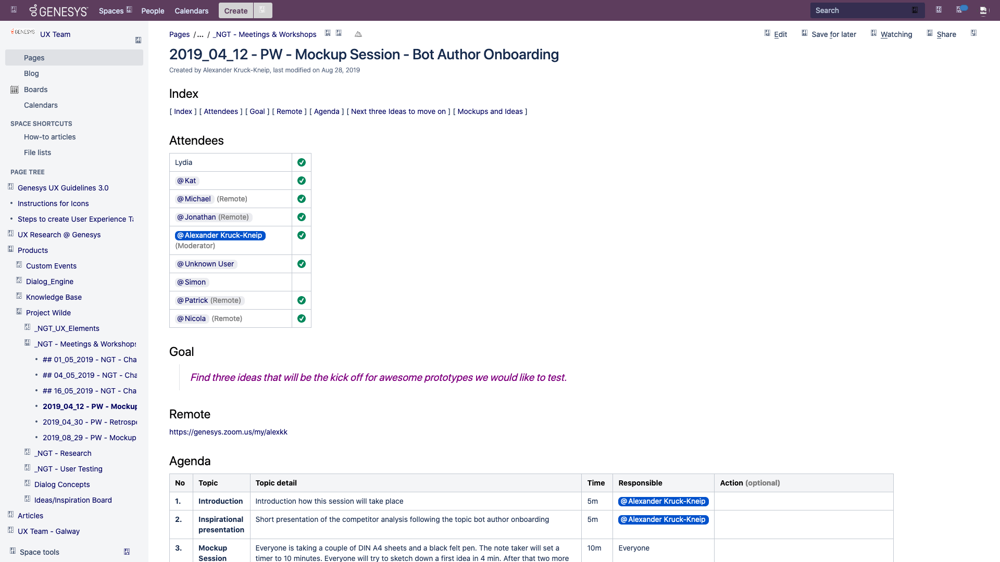
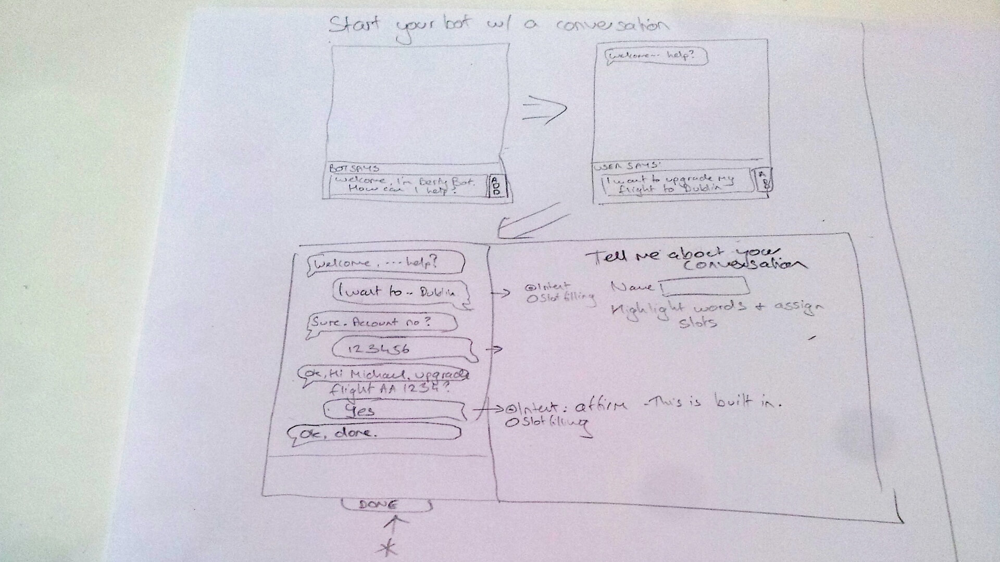
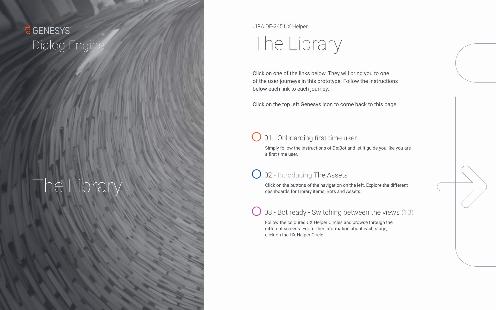
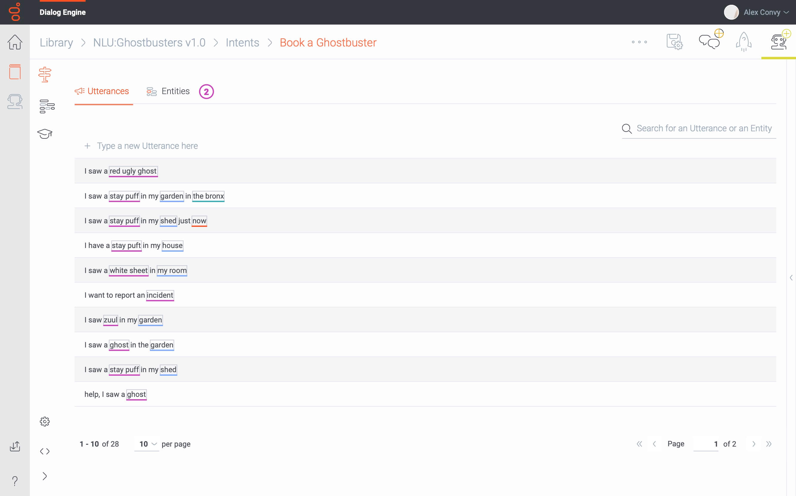
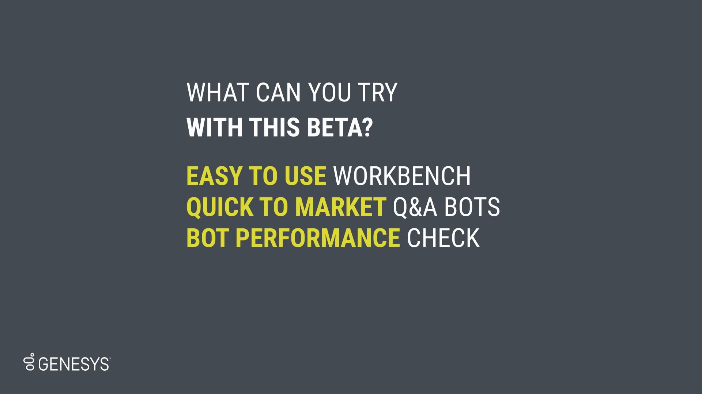

2019-2020 Ireland - Genesys
Easy to use bot authoring
When I started at Genesys in March 2019, the AI dev team in Galway was at the beginning of creating Genesy's first own bot authoring web app. Scroll down and follow the journey how we created a competitor to products from AWS and IBM in nearly nine months.
From start to success
Bot Topics
Topic 01
Challenges at the beginning
- The latest UX and UI was 'inspired' by a competitor product. Only high skilled developers were able to understand how to build a bot with it.
- But we already knew that to be successful we needed to develop for a less dev focused user group.
Challenges at the beginning
Kick off UX Design
- In a first round I organised regular remote whiteboard sessions with all key stakeholders located on three different continents. Together with lead developers, product managers, board members, language and AI scientists we were able to draw a first lo-fi userflow.
- A new key driver of success was the way I documented each session by recording it, sharing the action points we agreed on and being responsive for any question or feedback.
Challenges at the beginning
Tackle time zone challenges
- After having everyone aligned with a lo-fi prototype I was now able to bring it to the next level.
- Because the stakeholders were split on different continents I created self explaining click through solutions to enable everyone to give feedback despite different time zones.
Challenges at the beginning
Next steps
- Now that there was a first process in place that allow internal to empathise, define, ideate, prototype and test, it was time for the next level. New stakeholders became aware of our progress.
- In the interests of project management, their main topic was now on the agenda, onboarding.

Topic 02
Ideation workshop onboarding
- Together with members of the senior sales team, we identified the following use case as the most important one.
- As a bot author, I would like to learn how to build my bots quick and easy, so that I can use them to reduce calls, improve the bots performance and share them with other colleagues till the end of 2019.

Ideation workshop onboarding
Team split in Belfast and Galway
- For everyone else it was the first time ever they did such a sketching session. For me it was the first time I had to facilitate a workshop hybrid, remote and in the office.
- But with the help of Confluence this time we were able to harvest three main ideas we wanted to create hi-fi prototypes from, 'Guided conversation setup', 'Learn from best practice' and 'New Language Design'.
Ideation workshop onboarding
So much more for the backlog
- Despite the result and actions we took from the workshop the best part was that everyone agreed that this was also an entertaining session.
- We did not only had so much more ideas for our backlog, this was the kick off for so many more ideation sessions, later with Miro and always hybrid with stakeholders on up to three different continents.

Topic 03
Hi-fi prototyping new ideas
- In a moment where it was not clear where the Company design system will go, I got the support from engineering, product and sales to do a vision prototype.
- I was able to bring all ideas we had to life in one big interactive prototype including UI design and a new iconography.
Hi-fi prototyping new ideas
A solution to a bigger challenge
- For months now scientists, engineers and management discussed if and when, how to split the workbench. Together with a senior manager, we discussed use cases where we mimicked that we were the Ghostbusters and we opened offices all over the world.
- In remote whiteboard sketching sessions we created a user flow that helped us create answers and recommendations to solve many pain points raised by stakeholders.
Hi-fi prototyping new ideas
The Libary
- We have developed a user interface that makes it possible to combine modules that define the capabilities of the bot, which a user can put together. For example, modules can be developed for a bot in Germany that can answer customer requests regarding German ghosts in the German language.
- For this new way of thinking it was even more important to have an automatic onboarding procedure in place.
Hi-fi prototyping new ideas
Switching between the views
- Next to this article you find the result of the prototype after many iterations. It was so good that we caught the attention of the senior sales team.
- We hoped this prototype could inspire the sales team to help us take testing one step closer to our business customers.

Topic 04
A survey that carries a vision
- This user survey was special since it was for the first time with senior members from the sales team. Like other workshops before this user test had also to be done remote over different continents and timezones.
- The actual task of presenting the vision prototype, however, was to convince that we are in the process of developing a competitive, innovative, great product with awesome ideas.

A survey that carries a vision
Ready for the next step
- The sales team at Genesys is also responsible to train new customers on our service solutions on the Genesys SaaS platform. They had also experience in using competitor products from AWS and IBM.
- Of course there was a lot of feedback how to improve the product, but overall they gave us the go to move towards testing with real Genesys customers.
Topic 05
Success story
- Now that we were at the point that sales would support us to test with real users we didn't know how to proceed immediatelly. No design team has ever been at this point before at Genesys.
- My answer was organising a couple of ideation sessions with senior stakeholders with the goal to get lined up ten B2B users for testing within the next two months.

Success story
Let's make a movie
- The product team regularly send a presentation with an overload of information to customers to get in touch. The response rate was quite low. But I was able to get everyone on board with the idea of a little product promotion video.
- All senior stakeholders contributed to the copy and flow to convince our customers to test the product with us.
Success story
A PM can do an awesome voiceover
- The copy and animation for the promotion video was ready, but we were missing sound. To convince our PM I did the first voiceover. My German accent was probably not so well received and the product manager showed how it can be done so much better.
- Within two weeks we were able to double our expectations and lined up more than twenty customers who wanted to support us doing regular user testing on Dialog Engine.
Success story
The best for last
- After only nine months, the first double-digit million order for our bot authoring software was received. The first implementation after the first deal took a while, but our goal of being able to deliver to a first customer at the beginning of 2020 was achieved.
- Together with the million dollar deal I was successful with implementing a maintaining ux lifecycle to guarantee the quality of our product for now and in the future.